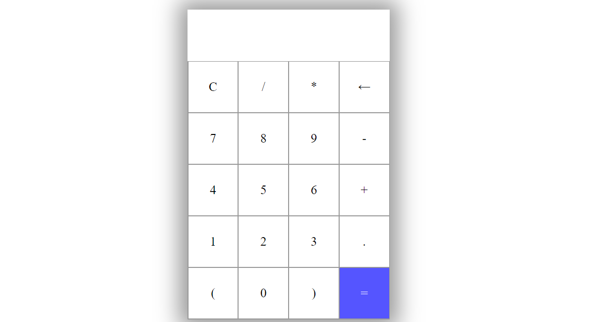

Calculator
Let's create a cool calculator with HTML, CSS, JavaScript.
This project is aimed to help beginners, who just started their javascript / frontend developer journey.
Projects are the best way to learn JavaScript, and a calculator is one of the best projects to choose.
Lastly, it is a beginner friendly project which makes it perfect for anyone.
The logic is very simple with the minimum lines of code possible.